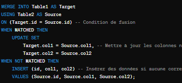
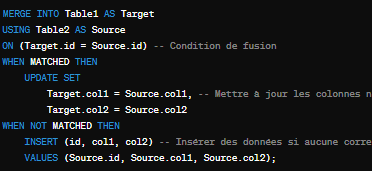

SQL
Le langage SQL, ou Structured Query Language, est un outil fondamental dans de nombreux domaines professionnels, jouant un rôle central dans l'informatique, la gestion de bases de données et le développement logiciel. C'est un langage de programmation standardisé utilisé pour gérer et manipuler des bases de données relationnelles, offrant une grande flexibilité pour effectuer diverses opérations telles que l'insertion, la mise à jour, la suppression et la récupération de données, ainsi que la création et la gestion de schémas de base de données.
L'histoire de SQL remonte aux années 1970, lorsque Donald D. Chamberlin et Raymond F. Boyce, travaillant chez IBM (International Business Machines Corporation, connue sous le sigle IBM, est une entreprise multinationale américaine présente dans les domaines du matériel informatique), ont développé le langage. À ses débuts, il était connu sous le nom de SEQUEL (Structured English Query Language) avant d'être rebaptisé SQL. Depuis lors, il est devenu le langage standard pour interagir avec les bases de données relationnelles, étant largement utilisé dans l'industrie informatique.
Dans le cadre du projet BL.PMSI, j'ai été confronté à des défis complexes liés à l'optimisation de l'accès à la base de données. Les performances du système étaient considérablement ralenties en raison de requêtes SQL non optimisées sur une base Informix. Après une analyse approfondie des schémas de base de données et une compréhension des modèles d'accès aux données, j'ai entrepris de réécrire les segments de requêtes, d'introduire des index pertinents et de réorganiser les données. Cette initiative a joué un rôle crucial dans l'amélioration significative des performances du système, réduisant considérablement les temps de réponse des requêtes et augmentant ainsi l'efficacité opérationnelle du projet BL.PMSI.

Fusion de données grace a un merge
Tout au long de mon parcours, j'ai développé des compétences avancées en SQL, couvrant divers aspects tels que la gestion des transactions et la sécurité des données, le développement de procédures stockées et de fonctions utilisateur, l'optimisation des performances et l'indexation avancée, ainsi que la modélisation et la conception de bases de données avancées, sans oublier la maintenance et l'administration des bases de données.
Pour parfaire mon expertise en SQL, j'ai l'intention de suivre plusieurs formations spécialisées en SQL avancé, disponibles sur des plateformes de formation en ligne telles que Coursera, Udemy et Pluralsight. Ces formations approfondiront des sujets avancés tels que l'optimisation des requêtes, la gestion des transactions, la sécurité des données, ainsi que les techniques avancées de modélisation et de conception de bases de données. Ce processus continu d'apprentissage me permettra non seulement de renforcer mes compétences techniques, mais aussi de développer une compréhension approfondie des meilleures pratiques et des normes industrielles en matière de gestion de données.
En tant que professionnel du développement, je suis convaincu que cette expertise avancée en SQL est indispensable pour atteindre mes objectifs professionnels. La maîtrise de SQL est au cœur de nombreuses applications et systèmes d'information, et elle est essentielle pour assurer la performance, la sécurité et la fiabilité des bases de données. Je tiens également à souligner que je possède un niveau confirmé en SQL, ce qui me permet d'aborder les défis de gestion de données avec assurance et efficacité.
En comprenant pleinement les subtilités de la manipulation des données et en étant capable de concevoir des bases de données optimisées, je serai en mesure de fournir des solutions robustes et évolutives à mes clients et à mon entreprise. En résumé, investir dans mon perfectionnement en SQL est un investissement crucial dans ma réussite professionnelle à long terme. Je suis impatient d'appliquer ces connaissances approfondies dans mes projets futurs et de contribuer de manière significative au succès de mon équipe et de mon entreprise.
L'histoire de SQL remonte aux années 1970, lorsque Donald D. Chamberlin et Raymond F. Boyce, travaillant chez IBM (International Business Machines Corporation, connue sous le sigle IBM, est une entreprise multinationale américaine présente dans les domaines du matériel informatique), ont développé le langage. À ses débuts, il était connu sous le nom de SEQUEL (Structured English Query Language) avant d'être rebaptisé SQL. Depuis lors, il est devenu le langage standard pour interagir avec les bases de données relationnelles, étant largement utilisé dans l'industrie informatique.
Dans le cadre du projet BL.PMSI, j'ai été confronté à des défis complexes liés à l'optimisation de l'accès à la base de données. Les performances du système étaient considérablement ralenties en raison de requêtes SQL non optimisées sur une base Informix. Après une analyse approfondie des schémas de base de données et une compréhension des modèles d'accès aux données, j'ai entrepris de réécrire les segments de requêtes, d'introduire des index pertinents et de réorganiser les données. Cette initiative a joué un rôle crucial dans l'amélioration significative des performances du système, réduisant considérablement les temps de réponse des requêtes et augmentant ainsi l'efficacité opérationnelle du projet BL.PMSI.

Fusion de données grace a un merge
Tout au long de mon parcours, j'ai développé des compétences avancées en SQL, couvrant divers aspects tels que la gestion des transactions et la sécurité des données, le développement de procédures stockées et de fonctions utilisateur, l'optimisation des performances et l'indexation avancée, ainsi que la modélisation et la conception de bases de données avancées, sans oublier la maintenance et l'administration des bases de données.
Pour parfaire mon expertise en SQL, j'ai l'intention de suivre plusieurs formations spécialisées en SQL avancé, disponibles sur des plateformes de formation en ligne telles que Coursera, Udemy et Pluralsight. Ces formations approfondiront des sujets avancés tels que l'optimisation des requêtes, la gestion des transactions, la sécurité des données, ainsi que les techniques avancées de modélisation et de conception de bases de données. Ce processus continu d'apprentissage me permettra non seulement de renforcer mes compétences techniques, mais aussi de développer une compréhension approfondie des meilleures pratiques et des normes industrielles en matière de gestion de données.
En tant que professionnel du développement, je suis convaincu que cette expertise avancée en SQL est indispensable pour atteindre mes objectifs professionnels. La maîtrise de SQL est au cœur de nombreuses applications et systèmes d'information, et elle est essentielle pour assurer la performance, la sécurité et la fiabilité des bases de données. Je tiens également à souligner que je possède un niveau confirmé en SQL, ce qui me permet d'aborder les défis de gestion de données avec assurance et efficacité.
En comprenant pleinement les subtilités de la manipulation des données et en étant capable de concevoir des bases de données optimisées, je serai en mesure de fournir des solutions robustes et évolutives à mes clients et à mon entreprise. En résumé, investir dans mon perfectionnement en SQL est un investissement crucial dans ma réussite professionnelle à long terme. Je suis impatient d'appliquer ces connaissances approfondies dans mes projets futurs et de contribuer de manière significative au succès de mon équipe et de mon entreprise.